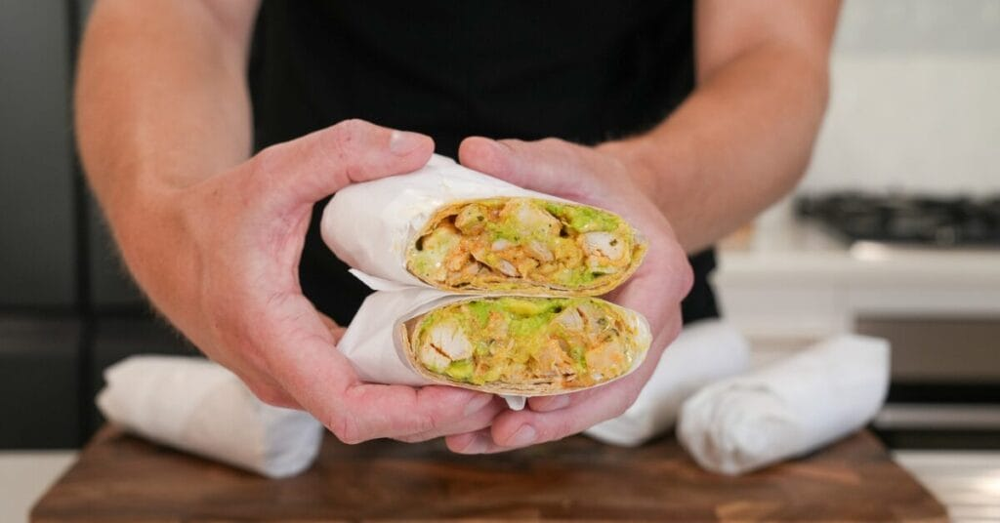

Chicken Wraps

Protein packed chicken and avocado wraps. Perfect for any occasion and suitable for most diets.
To store, wrap them in food paper or ziplock bags or place them in airtight containers. Store in the fridge for up to 4 days and in the freezer for up to 3 months. Thaw overnight in the refrigerator before reheating.
Ingredients
- Chicken & Wraps
- 600g (1.32lb) - Chicken Thigh, Boneless & Skinless
- 1 ½ tsp (4g) - Onion Powder
- 1 ½ tsp (4g) - Garlic Powder
- 1 ½ tsp (4g) - Smoked Paprika
- ½ tsp (0.5g) - Red Chilli Flakes
- 1 - Avocado, Diced, Sliced, or Mashed
- 100g (3.5oz) - Low Fat Mozzarella Cheese, Freshly Grated
- 5 - Burrito Tortillas
- Salt & Pepper to Taste
- Ranch Sauce
- 1 Cup (200g) - Low Fat Mayonnaise
- 2 ½ Tbsp (50g) - Low Fat Sour Cream
- ½ Cup (125ml) - Buttermilk
- 1 tsp (2.5g) - Onion Powder
- 1 tsp (2.5g) - Garlic Powder
- 1 tsp (1g) - Dried Dill
- 1 tsp (1g) - Dried Parsley
- 2 tsp (2g) - Dried Chives
- Salt & Pepper to Taste
Instructions
- Preheat oven to 190℃- 375℉. Line a baking tray with parchment paper.
- Add all of the ranch sauce ingredients into a bowl and mix well. Store in the fridge until ready to serve.
- Add the chicken thigh, olive oil, onion powder, garlic powder, smoked paprika, red chilli flakes, 1/3 of the ranch sauce, and salt and pepper in a bowl. Mix well to combine. Place onto the prepared baking tray and bake for 16-18 minutes. Remove and let rest before slicing or dicing.
- In the meantime, prepare the avocado by slicing, dicing, mashing, and grating the mozzarella cheese.
- Spread the remaining ranch sauce across the five burrito tortillas, and add the chicken, avocado, mozzarella cheese, salt, and pepper. Wrap tightly.
- Wrap in food-safe paper, aluminium foil or food-safe bags. Eat hot, warm or cold. Dig in.